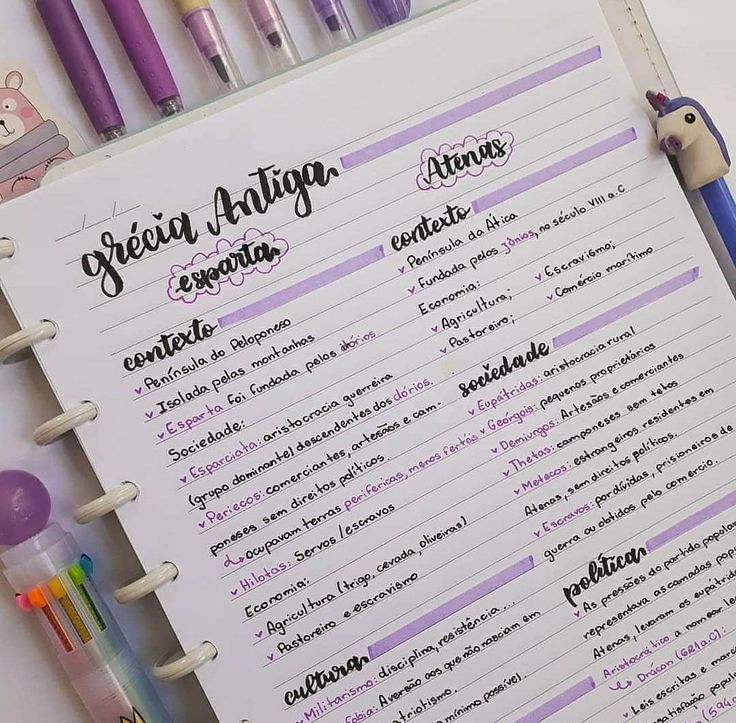

O estudo da língua portuguesa pode ser necessário em diferentes etapas da nossa vida pessoal, acadêmica e profissional. Sem o auxílio de um professor ou de apostilas escolares, porém, ele pode parecer mais difícil do que é de fato.
A primeira dica de como estudar Português segue o lema “ir por partes”. Afinal, ao dividir todo o conteúdo, que é extenso, é possível criar um planejamento de estudos. Dessa maneira, você consegue estudar de forma lógica e organizada.
Uma sugestão é dividir seus estudos pelos seguintes temas:
Elaborar mapas mentais com as principais palavras e informações sobre cada tema também é uma ótima opção para os estudantes que preferem estudar por recursos mais visuais.
Você pode montar o seu mapa escolhendo bem o que vai representar e pensar nas conexões feitas entre ele. Além disso, você pode acrescentar cores, formas geométricas e balões, para facilitar a identificação e a memorização de detalhes importantes.

Outra dica preciosa e que funciona é a elaboração de resumos. Esse é um método bem antigo, mas que ajuda muito os estudantes.
Você pode elaborar seus resumos por tópicos seguidos de exemplos para os diferentes assuntos da matéria. Isso ajuda a fixar melhor os conteúdos estudados, além de facilitar o processo de revisão.
Para que a parte teórica do Português não fique cansativa, você também pode procurar os assuntos específicos em vídeos disponibilizados na internet. Dessa forma, você tem mais chances de esclarecer dúvidas nos conteúdos que ainda não domina muito bem.
As videoaulas encontradas em vários canais no YouTube são uma ótima ferramenta para isso, pois são aulas mais dinâmicas e resumidas. Além disso, você pode pausar, voltar no ponto mais importante, rever quantas vezes for necessário, etc. Ou seja: você pode aprender no seu tempo.
Depois de aprender a teoria, é hora de colocá-la em prática. É um fato: fazer exercícios é uma ótima forma de testar seus conhecimentos e fixar os conteúdos vistos.
Se você não conseguir encontrar exercícios sobre o tema que procura, uma sugestão é usar ferramentas de inteligência artificial, como o Chat GPT. Você pode tentar resolver as questões, além de treinar suas habilidades de interpretação de textos, organização de pensamentos e utilização de novos vocabulários.
Todo estudante já deve saber que a prática da leitura faz toda a diferença. Seus benefícios podem ser observados não só na vida acadêmica, mas também na pessoal e profissional, pois se trata de um exercício que ajuda a ampliar o vocabulário, o repertório sociocultural e a desenvolver habilidades de escrita e interpretação de texto.
Além disso, ler faz com que você consiga reconhecer e avaliar de forma crítica os mais diversos textos e discurso que fazem parte do nosso cotidiano.
A nossa última dica de como estudar Português é utilizar as plataformas de simulados virtuais. Afinal, a tecnologia está aí para nos ajudar, não é mesmo?
Procure por simulados focados no seu objetivo principal — seja ele o Enem, outro vestibular, concursos ou apenas as provas da escola. Com bastante treino, você verá que fica muito mais fácil acertar as questões.
Além disso, os simulados costumam apresentar questões de diferentes níveis de dificuldade, o que permite que você se familiarize com o estilo das perguntas e identifique áreas que precisam de mais atenção.
| Área | Descrição |
|---|---|
| Fonética | Estuda os sons da fala, sua produção e características físicas. |
| Fonologia | Analisa os sons enquanto elementos de um sistema linguístico. |
| Morfologia | Trata da formação, estrutura e classificação das palavras. |
| Sintaxe | Estuda a organização das palavras em frases e orações. |
| Semântica | Analisa os significados das palavras e enunciados. |
| Estilística | Explora os recursos expressivos e efeitos de estilo na linguagem. |
Embora possa parecer, essa organização não é arbitrária: ela segue o processo de aprendizagem da língua natural de uma pessoa que ainda não sabe falar, como um bebê. Nesse sentido, leva em consideração a complexidade da língua e a articulação entre temas cada vez mais comum em tópicos avançados.
Para quem quer começar a estudar português do zero, portanto, esse cronograma é o que oferece um maior aproveitamento. Além disso, não torna a prática confusa.